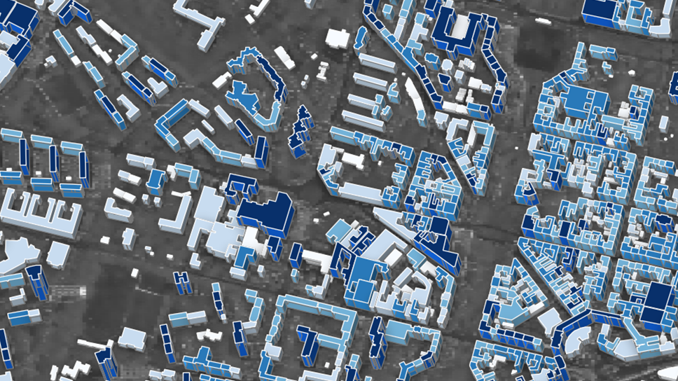
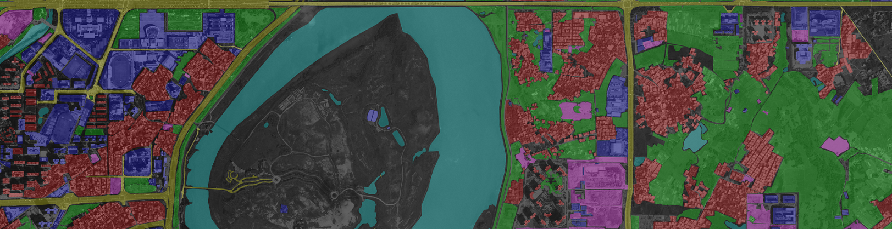

Lichao Mou
International AI Future Lab on AI4EO, TUM
Visual Learning and Reasoning team, Department: EO Data Science, DLR-IMF
lichao.mou[at]tum.de | Google scholar
Visual Learning and Reasoning team, Department: EO Data Science, DLR-IMF
lichao.mou[at]tum.de | Google scholar
Interests
I am broadly interested in vision algorithms for Earth observation applications. My work explores topics in remote sensing, computer vision, and machine/deep learning.
Research
-- Natural language x Earth observation --
-- UAV video understanding & satellite image time series analysis --
-- 3D structure inference from monocular optical/SAR imagery --


-- Recognition in remote sensing imagery (classification, detection, semantic segmentation ...) --

-- AI4EO use cases (glacier calving front delineation, GNSS-R ...) --
Team
Konrad Heidler
Zhenghang Yuan
Pu Jin
Daixin Zhao
Shanyu Zhou
Chandrabali Karmakar
Lixian Zhang (visiting, Tsinghua University)
Zhenghang Yuan
Pu Jin
Daixin Zhao
Shanyu Zhou
Chandrabali Karmakar
Lixian Zhang (visiting, Tsinghua University)
---- Former ----
Yuansheng Hua
Nikolaus Pinger
Runmin Dong (visiting, Tsinghua University)
Sining Chen
Yuansheng Hua
Nikolaus Pinger
Runmin Dong (visiting, Tsinghua University)
Sining Chen